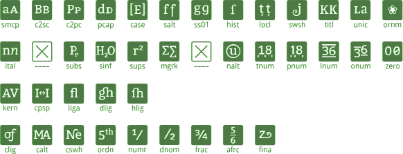
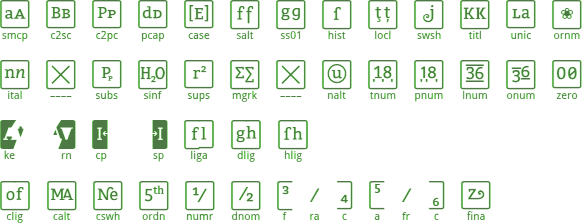

Testpage for OpenType Features
On this page I use my webfont Otfeat. It’s an icon font designed for testing OpenType features. For example:
OFF – The box is empty/white. That’s the initial situation and shows: The feature (here: smcp, small capitals) is either turned off or your browser isn’t able to display this feature.
 ON – After activation the box becomes filled/black. The feature smcp (small capitals) is turned on and your browser is able to show it.
ON – After activation the box becomes filled/black. The feature smcp (small capitals) is turned on and your browser is able to show it.
[In meinem Blog gibt’s einen kurzen Überblick zu Otfeat auch in Deutsch.]
↓ More about OpenType features.
1) OpenType features switched on
Here you can see which OpenType features are supported by your browser. They are switched on by CSS (the two boxes with an X are not yet associated with a feature):
abcdefghijklm
nopqrstuvwxyz
ABCDEFGHIJ
KLMNOPQRSTUVWZ
Here’s an image how it should look like (colored green for better destinction between the real test and the screenshot):

2) All features deactivated
The same text as above but this time the OpenType features are turned off:
abcdefghijklm
nopqrstuvwxyz
ABCDEFGHIJ
KLMNOPQRSTUVWZ
If it doesn’t look like the following image your browser ignores the deactivation of OpenType features:

3) No features explicitly de-/activated
That’s the default status in your browser:
abcdefghijklm
nopqrstuvwxyz
ABCDEFGHIJ
KLMNOPQRSTUVWZ
In some browsers individual OpenType features are activated by default, so some boxes may be black (e. g. standard ligatures and kerning in Firefox).
Some details
This page was published on June 12th, 2012.
With the CSS-setting text-rendering: optimizeLegibility it is possible, to activate some OpenType features in Safari (e. g. liga or calt). But after some testing I decided not to use this setting. Firstly it caused some rendering problems in Google’s Chrome (especially at test Nº 3) and secondly once activated the features couldn’t be deactivated again (test Nº 2).
The feature locl (localized forms) is programmed with a default language. So this is no test if browsers are capable of using a special localized alternative depending on the corresponding language tag. Maybe I’ll implement this in a future version.
The kernig of Otfeat (more precisely between A and B) is applyed by individual kerning pairs. Kernig by a matrix of kerning classes is not tested and could be failing. Again something for a future version of Otfeat.
Even if fina seems to be working, it does not necessarely do what it should. This feature is meant to replace letters only when they are at the end of a word. In the following example the fina box should be black only in the third case:
Z XZX XXZ
Otfeat’s small letters a–z represent single OpenType features which could be tested in any order. The capital letters are engaged with ligatures and context-sensitive features. The easiest thing that they will be shown correctly is to type the alphabet. At least the following pairs must be intact: AB, CD, EF, GH, IJ, RST and UVW. The pair KL has to be followed by an M. M and N depend on each other (in this order) and the O needs to follow an N.
Credits
Otfeat and this testpage was designed by Gerhard Großmann. You can reach me by mail to postfach2b [ät] web.de. I’m also on Twitter (@charakterziffer) and have a little blog in German.
Otfeat is released under CC-BY-NC-SA, so you can use and modify it for your own needs. Download: woff, eot or ttf.
More about OpenType features
OpenType features are special functions which are programmed into a font. Examples are small capitals, swash letters or old-style figures. These functions can be activated in superior office and design programms – and as of late also in browsers.
The Microsoft website offers a detailed list with common OpenType features. There you also find descriptions for the 4-letter-abbreviations used in Otfeat. At I Love Typography there’s a nice article with concrete examples how some substitution features look like in practice.
Typotheque published another test for OpenType features in browsers – but: they get slightly different results than me (e. g. they couldn’t deactivate ligatures in Firefox). Don’t know why …